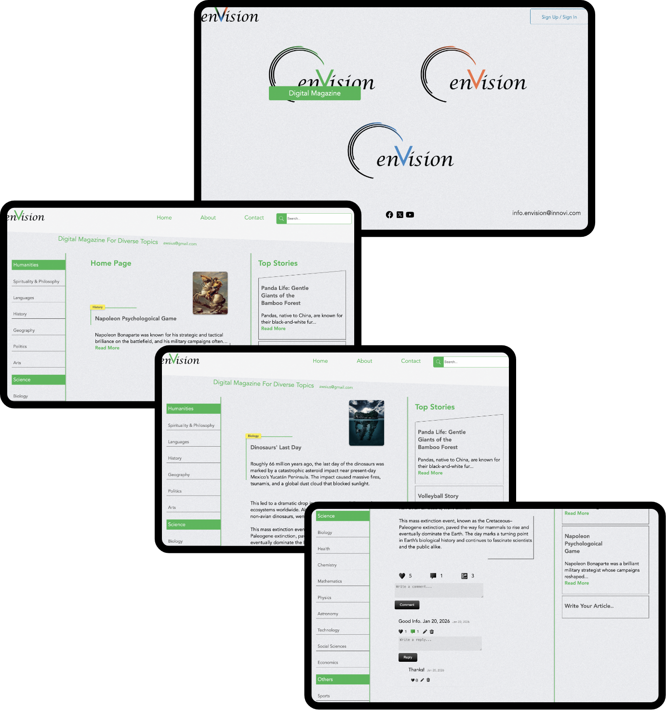
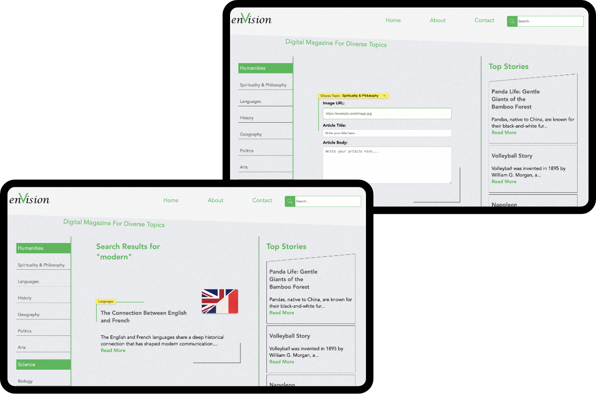
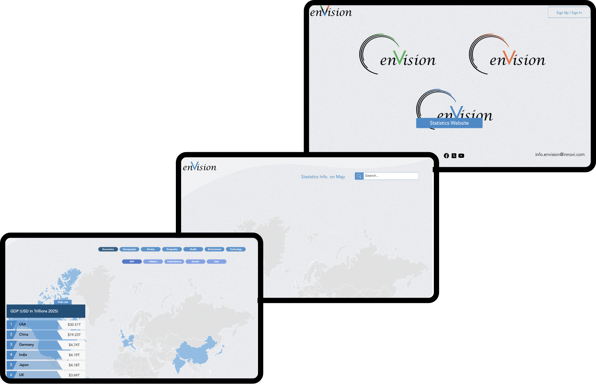
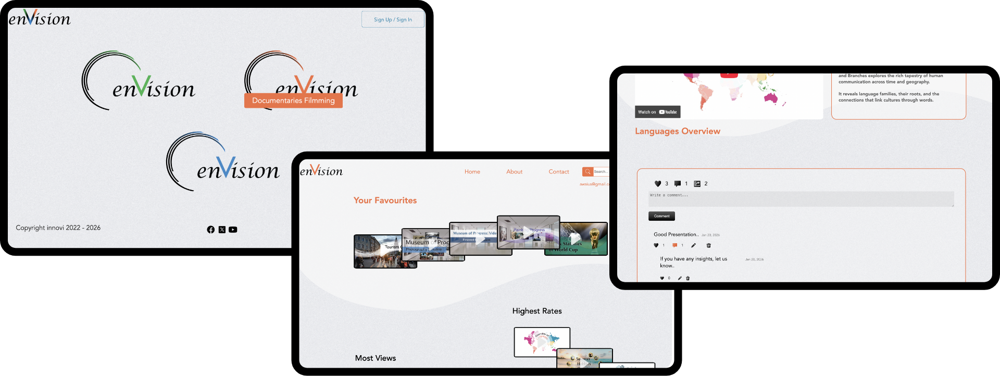

The main page introduces three key sections.
1 – Digital Magazine:
Explore a curated collection of articles spanning a wide range of topics, delivered in a distinctive and elegant format. Our unique approach transforms complex ideas into concise, informative reads that enrich knowledge without overwhelming the reader.

Top articles are showcased based on community engagement, such as likes and comments.
Users can actively participate through likes, comments, and sharing, fostering a vibrant community.
Community members can contribute their own articles and enhance them with visuals.
Powerful search makes it easy to discover articles on any topic of interest.
Users can become part of the community by creating their own articles and enriching them with visuals.
Search effortlessly for articles across any subject of interest.

2 – Statistics
Explore interactive data visualized on a global map, covering diverse topics and showcasing leading countries in each category.
We aim to continuously enrich this section with additional data layers and visuals that transform information into meaningful insights.

3 – Documentaries
This section features short documentary films that enhance knowledge through engaging visual storytelling. Each film is designed to present ideas and real-world topics in a clear and accessible way.
Creators are invited to submit their own documentaries and become part of the enVision community, contributing to a shared space for learning, creativity, and meaningful stories.
